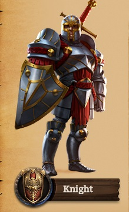
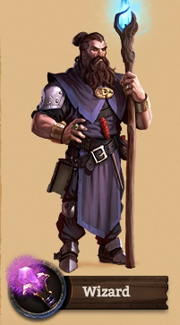
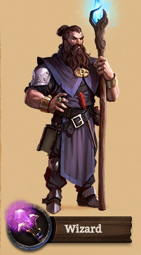

Osztályok
 

Kingsroadban 3 osztály közül lehet választani: harcos, íjász, varázsló. A játék során ezek között könnyen lehet váltogatni. Mindegyik osztálynak más-más feladata van, különböző támadó és védekező képességekkel rendelkeznek.
Harcos
A harcos nagyon fontos osztályként szolgál a játékban. Az egyetlen közelharci osztály, ellentétben az íjásszal és a varázslóval. A legnagyobb fegyvere az erős védelme, azonban kevésbé képes károkat okozni az ellenségesnek, így inkább az ellenség figyelmét magára vonva segíti csapattársait. Fegyvere: karc és a pajzs, bár vannak akik a pajzsot még egy kardra cserélik le, így csökkenteve ugyan a védelmét, de ugrásszerűen megnövelve a harcos támadási erősségét.
Íjász
Az íjász egy távolharci osztály, amely íjakat használ az ellenségeinek megsebzésére. Hátulról képes támogatni a harcosokat, így gyakran elkerüli a halált. Képességei elsősorban sebzésre épülnek, de képes segítőket is megidézni, akik válvetve harcolnak mellette. Véleményem szerint ez a legalkalmasabb osztály az arany farmolására, hiszen a spread shot képessége elég nagy hatótávolságú és gyorsan is tölt újra.
Varázsló
Ugyanúgy mint az íjász ez az osztály is a távolharcra specializálódott, nem rendelkezik nagy védekezéssel, ezt az élettöltő képességeivel kompenzálja. Két fegyvere van a bot és a pálca, a varázslatai többségéhez nem kell ellenséget találnia, mert terület alapú.